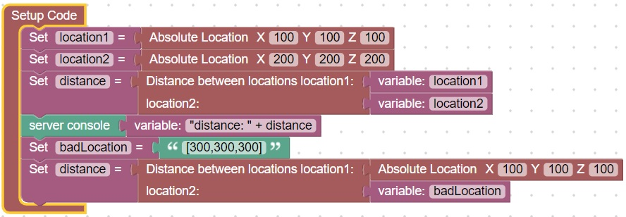
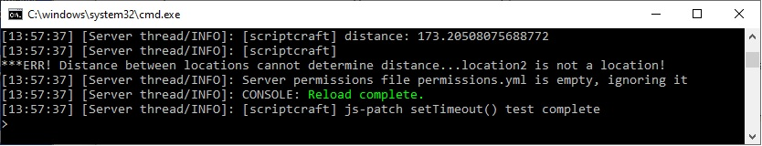

Server Error Messages
Sometimes we connect an incorrect type to a block and have to dig through the code to find where a server error is occuring.
In order to make this task easier, the code will check the type of some inputs to validate the block makes sense
For example here is an example of an incorrect distance computation:

When run, it will generate errors that look like this:
